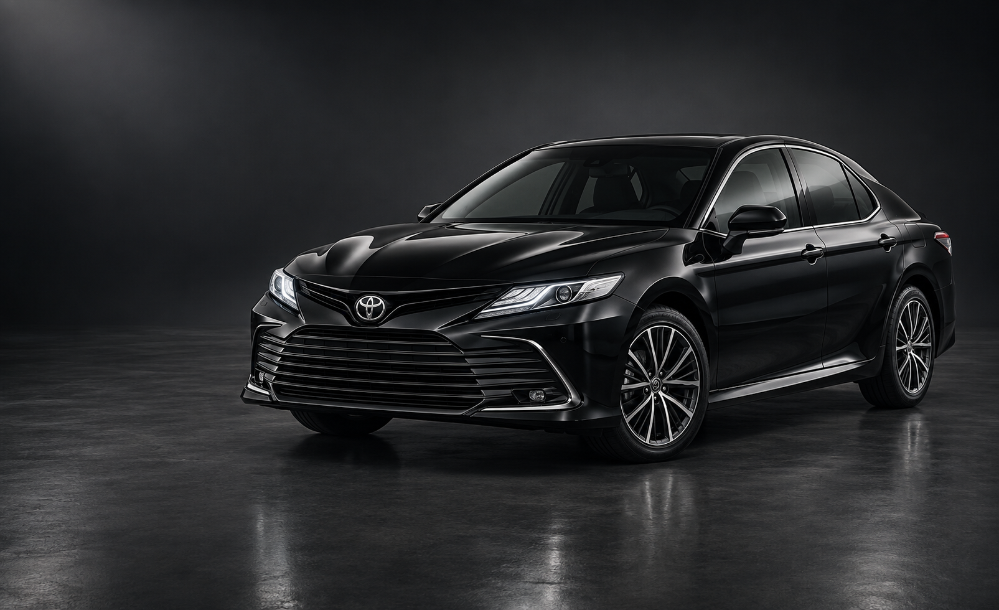

Toyota Camry
БизнесПроверяем…
Уверенность в каждой поездкеCamry 70 / 75

Аренда без водителя в Грозном. От повседневных поездок до особенных встреч.
Выбрать автомобильToyota Camry, бизнес-класс
На каждый день. Для особого случая.
Проверяем…
Уверенность в каждой поездкеCamry 70 / 75
Проверяем…
Когда важны деталиE-Class W213
Проверяем…
В ритме твоего дняFocus III
Проверяем…
Просто сесть и поехатьPriora 2
Стоимость и наличие уточним на ваши даты. Изображения иллюстративные; комплектация и внешний вид могут отличаться.
Для города, деловой встречи или поездки на выходные.
Напиши даты в WhatsApp. Уточним стоимость, залог и условия аренды.
Договоримся о месте и времени. Доставка по Грозному бесплатная.
Требования к документам, возрасту и стажу уточните при бронировании. Менеджер сообщит условия для выбранного автомобиля до оформления.
Выберите автомобиль и укажите даты поездки. Менеджер подтвердит актуальную цену, наличие и размер залога в WhatsApp.
Да, доставка по Грозному бесплатная. Место и время передачи согласуйте заранее.
Расскажи о своих планах. Подберём автомобиль и договоримся о деталях.
Написать в WhatsApp